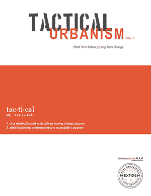
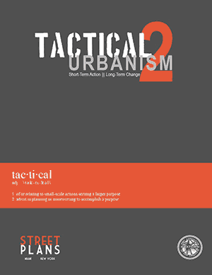
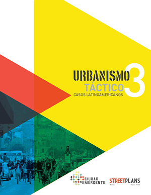

Tactical Urbanism Volume 1 (2011)
- Contributors
-
- Mike Lydon
- Dan Bartman
- Ronald Woudstra
- Aurash Khawarzad
Tactical Urbanism Volume 2 (2012)
- Contributors
-
- Mike Lydon
- Dan Bartman
- Tony Garcia
- Russ Preston
- Ronald Woudstra
Urbanismo Táctico Volumen 3 (2013)
- Contributors
-
- Kurt Steffens
- Marisol García
- Javier Vergara
- Mike Lydon
- Aurash Khawarzad
- Claudia Olavarría
- Manuela Garretón
Tactical Urbanism Volume 4 (2014)
- Contributors
-
- Lucinda Hartley
- Mike Lydon
- Alex Mengel
- Katie Wallace
- Matt Budahazy
- Nicholas Monisse
- Melissa Yee
- Selena Kearney
- Australia and New Zealand
- 11 tactics, 35 case studies
-
- Download